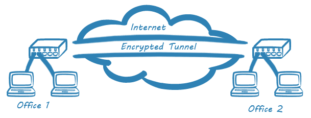

Какво е частна виртуална мрежа?
Разберете как мрежите се разширяват и се правят по-сигурни чрез...
Подходи за реализиране на virtual private network - VPN

Site-to-Site VPN
Свързва две или повече мрежи, като корпоративна мрежа и мрежа от клонове.

VPN с отдалечен достъп
Предоставя достъп до корпоративната мрежа от отдалечени потребители, като служители, които работят от вкъщи или от път.

Други подходи
Освен тези два основни подхода, съществуват и други подходи за реализиране на VPN като ...